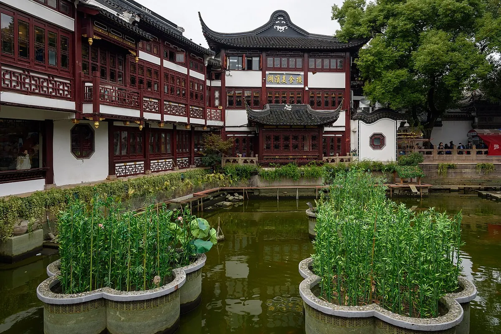
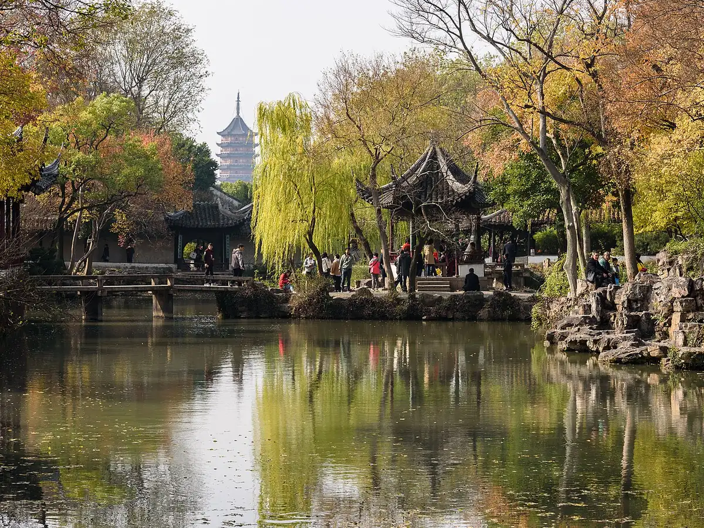
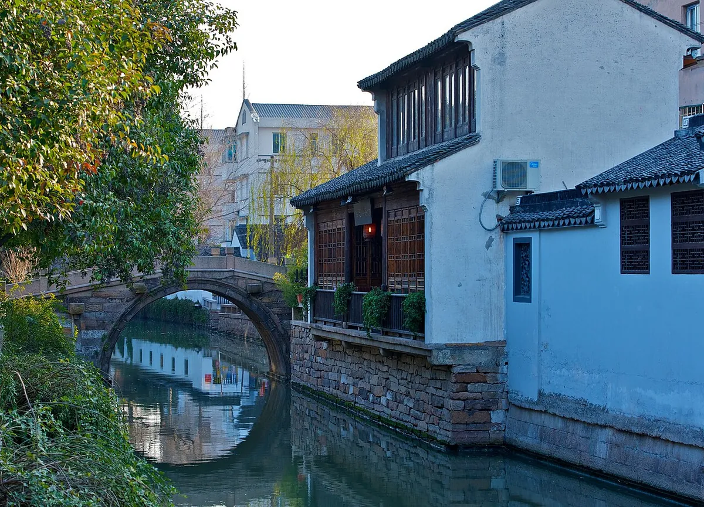
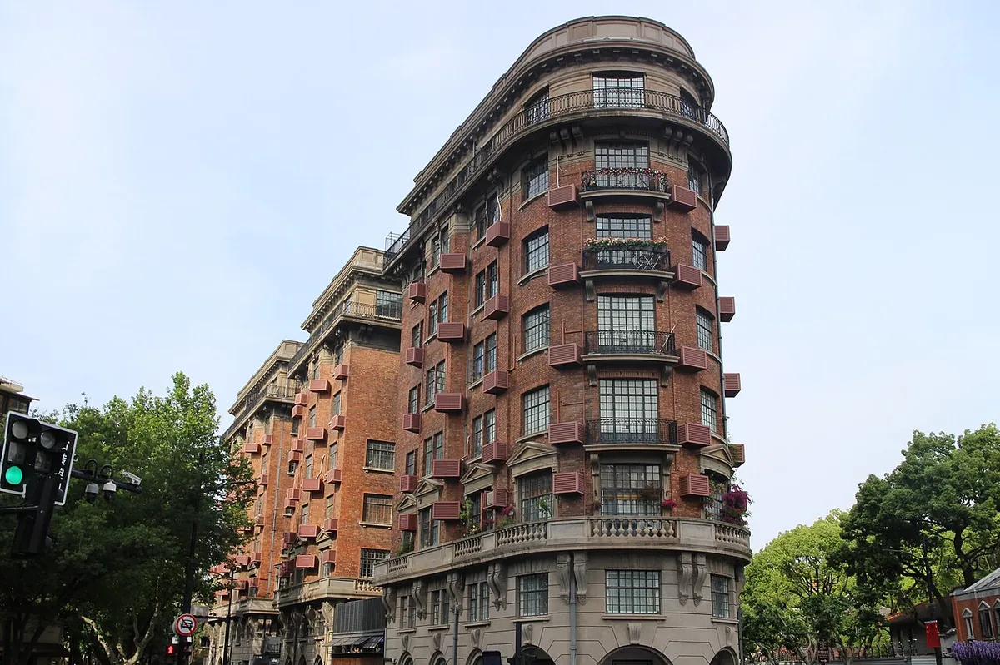
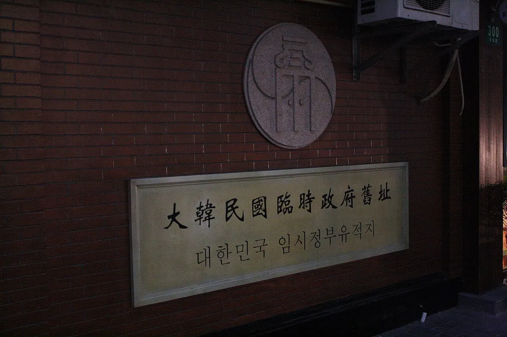

마일스톤
다 예정이에요. 끝낸 건 아직 없어요.
- 11월 초예정항공권 예약김포–홍차오 OZ3615 · OZ3625, 마일·세금·3명 좌석 재조회 후 발권
- 11월 안확인 필요무비자 연장 공지 확인현재는 12/31 입국까지. 2027 공지는 아직 없어요.
- 11월 안예정숙소 예약2호선 징안·난징서로 쪽
- 12월 초예정디즈니 티켓12/29 날짜로 공식 앱에서
- 12월 초예정알리페이·위챗페이, eSIM디디를 알리페이에 연결. 카드 해외결제 켜기
- 12월 초예정환전 · 여행자 보험
- 12/15쯤예정소주 고속철 예매12/30 표는 보통 15일 전 오픈 · 12306 또는 트립닷컴
- 12/27 일예정짐 싸기, 여권 3권 확인숙소 주소 중국어 캡처
- 12/28 월출발 · 상하이 도착OZ3615 김포 16:00 – 홍차오 17:15
- 12/29 화디즈니랜드
- 12/30 수소주 당일치기
- 12/31 목시내 산책점심 점도덕 · 저녁 사우나
- 1/1 금귀국OZ3625 홍차오 18:15 출발 · 김포 21:20
이코노미 항공
김포 국제선 출발, 홍차오공항 T1 도착이에요. 시간은 아시아나 동계 스케줄(26.10.25–27.03.27, 매일) 기준이고, 마일리지·좌석은 다시 조회해야 해요.
가는 편 · 12/28 월
OZ3615 · 16:00–17:15오는 편 · 1/1 금
OZ3625 · 18:15–21:20닷새
숙소는 2호선 징안·난징서로 쪽이 편해요. 디즈니도, 홍차오역 소주 열차도 한 번만 갈아타면 됩니다.

랜드마크
핵심 포인트
- 홍차오는 시내와 가까워요. 입국·짐 찾고 디디로 징안 숙소까지 대략 30–50분(교통 따라 다름).
- 지하철이면 T1은 10호선, 2호선은 T2 쪽이에요. 짐 있으면 디디가 편해요.
- 저녁은 숙소 근처에서 간단히, 일찍 자기.
- 게살국수·예원·난징동루는 남는 날로.
랜드마크
핵심 포인트
- 이 일정에서 가장 한산한 평일. 12/31–1/1은 피해요.
- 2호선 → 장쑤루역에서 11호선, 디즈니 역. 약 1시간.
- 개장에 맞춰 들어가고, 퍼레이드 한 번 보고 나오기.


랜드마크
핵심 포인트
- 홍차오역까지 2호선, 고속철 약 25–35분.
- 졸정원 하나, 평강로 산책, 샤오롱바오.
- 북역·공업원구역은 시내와 멀어서 안 써요.


랜드마크
핵심 포인트
- 우캉루나 톈즈팡. 아이 컨디션 보면 임시정부 청사.
- 점심은 점도덕 신천지점. 임시정부 청사에서 걸어서 8분.
- 연말 와이탄은 인파 통제가 있어서 저녁은 숙소 근처 중국 사우나.
- 짐 싸 두기. 내일은 저녁 비행이라 여유 있어요.
랜드마크
핵심 포인트
- 체크아웃 후 짐 맡기고 오전에 숙소 근처 산책·점심. 와이탄 게살국수도 가능.
- 15시쯤 숙소 출발, 홍차오 T1에 16시 전후 도착.
디즈니, 여섯 살
하루만 씁니다. 영업시간은 출발 전 공식 앱에서 다시 봐요. 연말 주말은 줄이 길어져요.
타도 되는 것
- 일곱 난쟁이 광산 열차, 피터팬, 수정 동굴 보트
- 덤보, 회전목마, 버즈 라이트이어
- 캐릭터 만남, 낮 퍼레이드
키 보고 결정
- 트론은 발사 코스터라 여섯 살에게 무서울 수 있어요. 키 제한도 확인.
- 줄이 긴 어트랙션은 오전에 하나, 오후는 쇼와 천천히 걷기.
소주, 하루
상하이 홍차오역에서 쑤저우역까지 고속철이 하루 종일 있어요. 가장 빠른 편은 약 23분, 보통 25–35분입니다. 2등석 편도 약 30–50위안.
| 탈 역 | 상하이 홍차오역2·10·17호선 |
| 내릴 역 | 쑤저우역졸정원·평강로와 가까움 |
| 안 쓰는 역 | 쑤저우 북역, 공업원구역. 시내와 멀어요. |
| 예매 | 12306 또는 트립닷컴. 보통 출발 15일 전 오픈. 12/30 표는 12/15쯤. |
| 이름 | 여권 영문 이름 그대로. 아이 여권도 필요. |
아이랑 코스
- 오전: 졸정원 하나면 충분. 정원 두 개는 지쳐요.
- 점심: 역 근처나 평강로에서 면, 샤오롱바오.
- 오후: 평강로 운하 산책. 배 한 번이면 충분.
- 주자자오까지는 이날 넣지 않아요. 이동이 더 길어요.
먹고 쉬기
꼭 해 볼 네 가지예요. 가게 이름은 고덕지도(高德地图)에 한자로 붙여 넣으면 찾아져요.
12/31 점심 · 딤섬
점도덕 신천지점 · 点都德(中海环宇荟店)- 홍미창펀(红米肠) 6개 44위안. 1인 3개쯤 생각하고 주문하세요.
- 하가우, 샤오마이, 차슈바오 같이. 찻값은 1인 8위안 따로 있어요.
- 예약은 안 되고, 따종디엔핑(大众点评) 앱으로 당일 원격 줄서기를 할 수 있어요. 11시 전에 가면 덜 기다려요.
12/28 점심 · 게살국수
좡스룽싱 와이탄점 · 庄氏隆兴(外滩店)- 제대로 고급으로 먹고 싶으면 해가대원 · 蟹家大院(广东路59号). 게살국수가 360위안 정도예요.
- 둘 다 느끼하다는 후기가 있어서, 셋이서 한 그릇에 다른 메뉴를 같이 시키는 게 좋아요.
12/31 저녁 · 중국 사우나
숙소 근처 대형 사우나 · 洗浴中心- 중국 사우나는 탕, 찜질, 식사, 휴게실까지 한곳에 있어요. 아이랑은 가족 휴게 공간이 있는 곳으로요.
- 지점은 숙소를 정한 뒤 따종디엔핑에서 고르면 돼요.
매일 아침 · 호텔 배달
길거리 아침 · 또우장(豆浆)- 알리페이 안의 메이퇀(美团)·어러머(饿了么)로 주문할 수 있어요.
- 배달은 호텔 로비에서 받는 경우가 많으니, 체크인할 때 받는 위치를 물어봐 두세요.
- 12/29 디즈니 날은 일찍 나가니까 전날 밤에 미리 주문해 두면 좋아요.
참고: 점도덕 신천지 후기 · 좡스룽싱 와이탄점 후기 · 해가대원 후기 · 가격은 후기 작성 당시 기준이에요.
무비자, 출국
12/28 입국은 기한 안
한국 일반여권 무비자는 2026년 12월 31일 24시까지 입국할 수 있고, 들어오면 최대 30일이에요. 1/1 출국은 그 30일 안입니다. 2027년 연장 공지는 11/3 기준 아직 없어요.
확인 필요 · 2027 연장 여부 · 대사관 02-755-0568출처: 주한 중국대사관 공지 · 베이징시 외사판 FAQ
결제
- 알리페이 또는 위챗페이. 한국 카드 해외결제 켜 두기.
- 디디는 알리페이에 연결해 두면 택시가 편해요.
- 지하철은 알리페이 교통카드, 또는 1회권.
챙길 것
- 여권 3권. 유효기간은 체류보다 길게.
- 아이 상비약, 여벌 옷, 보조배터리.
- 디즈니 티켓, 소주 기차표, 귀국 항공권 화면.
- 숙소 주소 중국어로 캡처. 디디에 붙여 넣기.
예원 King of Hearts · CC BY-SA 4.0

디즈니 성 Riku Lu · CC0
.jpg){kind=link}
졸정원 King of Hearts · CC BY-SA 4.0

평강로 kevinmcgill · CC BY-SA 2.0

우캉맨션 Suicasmo · CC0

임시정부 청사 Ericmetro · CC BY-SA 3.0

크기를 줄이고 일부 잘라서 썼어요. 각 라이선스: CC BY-SA 4.0 / 3.0 / 2.0, CC0.
이코노미만 정리했어요. 항공은 김포–홍차오 OZ3615·OZ3625(아시아나 동계 스케줄 공지 기준)로 바꿨고, 마일리지·세금·좌석은 다시 조회해야 해요. 아직 발권하지 않았어요. 고속철 시간은 상하이 홍차오–쑤저우역 일반 소요고, 당일 시각표에서 다시 고르면 됩니다.